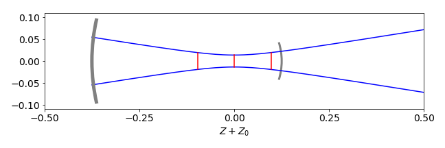
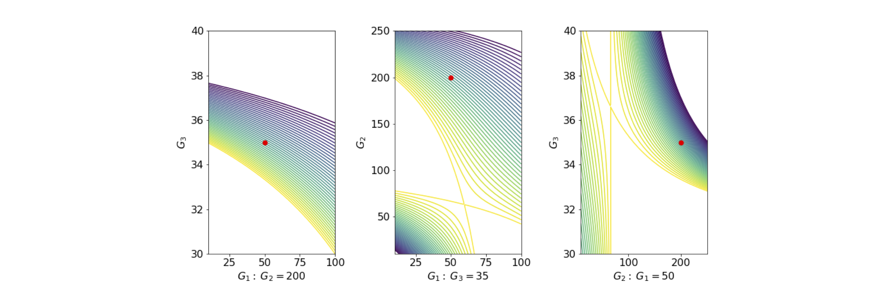

Solutions Q35 - 39¶
# import all python add-ons etc that will be needed later on
%matplotlib inline
import numpy as np
import matplotlib.pyplot as plt
from sympy import *
init_printing() # allows printing of SymPy results in typeset maths format
plt.rcParams.update({'font.size': 14}) # set font size for plots
Q35 answer¶
Using the notation that G is the matrix for a gap, and L for a lens, then the matrices are multiplied in the order: \(G(x)L(f_2)G(d)L(f_1)G(u)\)
The lens matrix containing \(f_1\), first multiplies the matrix to its right, then the central matrix multiplies this result and so on. The calculation is shown below. A function of the lens matrix \(L\) and gap matrix \(G\) is made so that they can be used with different parameter values, \(d\) and \(n\). Because an image is formed, element B, which is at position (\(1, 2\)) in the matrix, is made equal to zero. The resulting equation is then solved for \(x\), the unknown distance. The magnification is the reciprocal of element \(D\) in position (\(2, 2\)).
d, u, f, x, f1, f2, d = symbols('d, u, f, x, f1, f2, d')
n = 1 # if the constants are not defined here an algebraic result is obtained
f1= 0.10
f2= -0.2
d = 0.05/n
u = 0.25/n
Gd = Matrix( [ [1,d/n], [0,1] ] )
Gu = Matrix( [ [1,u/n], [0,1] ] )
Gx = Matrix( [ [1,x], [0,1] ] )
L1 = Matrix( [ [1,0], [-1/f1,1] ] )
L2 = Matrix( [ [1,0], [-1/f2,1] ] )
ABCD = Gu*L1*Gd*L2*Gx
simplify(ABCD.det() ) # check determinant is 1
simplify(ABCD)
mag = 1/ABCD[1,1]
mag
The image is formed at \(x= 0.175/0.625=0.28\) m from the second lens, is inverted, because the magnification is negative, and magnified by 1.6 times. This algorithm can be used to calculate the properties of any two lenses separated by any amount and the input and output at any distances. Any imaginary (complex) numbers for the distances means that what you are trying to determine is not possible with the values of focal lengths chosen.
Q36 answer¶
Write down the sequence of matrices, remembering to divide the gap matrices by the refractive index of the material, taking air to be 1. The multiplication order is:
The thickness of the lens is a gap of length \(d_L\). Use python to get a numerical answer
# thick lens calculation
MG = lambda x,n: np.array( [ [1,x/n], [0,1] ] )
MR = lambda r,n2,n1 :np.array( [ [1,0], [-(n2-n1)/r,1] ] )
r1 = -100.0
r2 = 300.0
n1 = 1.0
n2 = 1.48
dL = 6.0
f01 = np.dot( MG(dL,n2), MR(r1,n1,n2) ) # use dot product for matrix multiplication
f02 = np.dot( MR(r2,n2,n1), f01)
ABCD = np.dot( MG(x,n1), f02)
focal_length = solve(ABCD[0,0],x)
print('{:s} {:8.2f}'.format('focal length ', focal_length[0] ) )
print('{:s} {:6.3f}'.format('magnification ',1/ABCD[1,1]) )
focal length 153.96
magnification 1.007
Solving element \(ABCD[1,1]=0\), is equivalent to making \(A = 0\), because this produces a focal length for a parallel input beam. The focal point is \(\approx 154\) mm from the right-hand surface of the lens.
Q37 answer¶
Use python/Sympy and equations in the text with \(M\) as the \(ABCD\) matrix. The position of the waist is at \(z\) to the left of the output mirror, which is taken to be at the reference planes.
M1 = lambda f :np.array( [ [1,0], [-1/f,1] ]) # mirror matrix
G1 = lambda L: np.array( [ [1,L], [0,1] ]) # gap matrix
L = 0.5 # laser length metres
f1 = 0.1
f2 = 0.2
M = G1(L) @ M1(f2) @ G1(L) @ M1(f1) # matrix multiply
A = M[0,0]
B = M[0,1]
C = M[1,0]
D = M[1,1]
theta = np.arccos( (A+D)/2 )
print('{:s},{:f},{:f},{:f},{:f},{:f},{:f}'.format('A,B,C,D, theta, determinant',A,B,C,D,theta, A*D-B*C ) )
A,B,C,D, theta, determinant,1.000000,-0.250000,10.000000,-1.500000,1.823477,1.000000
lambda1 = np.exp(1J*theta) # 1J is sqrt(-1)
lambda2 = np.exp(-1J*theta)
print('{:s} {:g} {:g}'.format('eigenvalues =', lambda1,lambda2))
wavel = 600e-9 # metres (red light wavelength)
R = 2*B/(D-A)
print('{:s} {:g} '.format('radius of curvature at ref planes=', R))
omegaM = np.sqrt(-wavel*B/(np.pi*np.sin(theta)) )
Z = (A-D)/(2*C)
print('{:s} {:g} '.format('min beam waste at z =', Z))
omega0 = np.sqrt(wavel*np.sin(theta)/(np.pi*C))
print('{:s} {:g} '.format('min beam radius=', omega0))
Z0 = np.pi*omega0**2/wavel
print('{:s} {:g} '.format('confocal length =', Z0))
omega = lambda z: ( omega0*np.sqrt(1 + ( wavel*z/(np.pi*omega0**2) )**2) ) # radius vs length
eigenvalues = -0.25+0.968246j -0.25-0.968246j
radius of curvature at ref planes= 0.2
min beam waste at z = 0.125
min beam radius= 0.000135986
confocal length = 0.0968246
To plot the beam waist use \(\mathtt{omega(z)}\). Notice how the beam expands outside the cavity, figure 85.

Figure 85. Calculation of a laser beam in a cavity with \(L = 0.5, f_1 = 0.1, f_2 = 0.2\) metres. The beam radius is multiplied by \(100\) for clarity. The mirror surfaces are drawn as thick grey arcs. The confocal range is shown in red as is the position of beam waist.
Q38 answer¶
(a) The matrix for a gap is \(\displaystyle \begin{bmatrix} 1 & d \\ 0 & 1 \end{bmatrix}\) then two gaps \(d_1\) and \(d_2\) form the matrix
Multiplying the matrices the other way around is clearly going to give the same result, which is not a convincing proof of what we want because the diagonals are both one. Next, consider a gap and mirror then
and the calculation the other way around gives
which shows that the diagonal elements are exchanged as proposed. In the cavity, any pair of gap-mirror or mirror-gap matrices is related by exchanging the diagonals, so by induction this is true for any gap-mirror combination since two mirrors cannot occur without a gap between them.
(b) Is this order reversal true for any \(ABCD\) matrix combination? The proof is not so obvious, but starts with the clue given in the question. The matrix product given is for the \(n^{th}\) matrix and as it represents an individual matrix then \(A=D=1\). In the last step \(AD-BC=1\) is used. The product gives
where some steps are missed out. The same calculation can be done for any \(ABCD\) matrix; it is just a little more complicated algebraically, therefore we can conclude that
This equation can be rewritten by replacing the product of the \(G\) matrices with single matrices as
Matrix division is not possible thus \(\pmb{M_G}\) is found multiplying by the inverse matrix \(\displaystyle \begin{bmatrix} A & B \\ C & D \end{bmatrix}^{-1} \) and then \(\begin{bmatrix} -1 & 0 \\ 0 & 1 \end{bmatrix}^{-1}\) which gives the result
which is what we wanted to prove as the diagonal is reversed. The inverse of a \(2 \times 2\) matrix is given in Section 5.7, alternatively with python/Sympy
A, B, C, D = symbols('A, B, C, D')
ABCD = Matrix([[A,B],[C,D]])
X = Matrix([[-1,0],[0,1]])
G = X * ABCD**(-1) * X**(-1)
G
G.subs(A*D - B*C,1) # substitute with value from determinant
Q39 answer¶
The matrix for the cavity is \(\displaystyle \pmb{M} = (G_1M_2G_2M_3G_3)\,M_4\,(G_3M_3G_2M_2G_1)\,M_1 \).
and the brackets are added to define the elements between the end mirrors. Using python/numpy, the matrices are defined as functions of the gaps and focal length so that several similar matrices do not have to be typed in. We are only interested in numerical results so numpy is used instead of Sympy. Instead of making \(DBCA\) directly as done below, it can also be calculated by exchanging the indices or using multiplication as in question 38;
G = lambda d: np.array( [ [1,d], [0,1] ])
M = lambda f: np.array( [[ 1,0], [-1/f,1] ])
L1 = 50
L2 = 200
L3 = 35
f1 = 60
f2 = 100
f3 = 30
f4 = 100 # focal lengths
ABCD = G(L1) @ M(f2) @ G(L2) @ M(f3)@G(L3)
DBCA = G(L3) @ M(f3) @ G(L2) @ M(f2)@G(L1)
Laser_matrix = ABCD @ M(f4) @ DBCA @ M(f1)
stability = (Laser_matrix[0,0]+ Laser_matrix[1,1])/2.0
stability
The trace of the determinant divided by \(2\) is \(\lt 1\), making the cavity stable. If you change gap 3, the cavity soon becomes unstable.
As an exercise, plot out the stability by changing the gaps between the two mirrors. The same can be done for the mirror radii at fixed gaps. Using the complex beam parameter, see Gerrand and Birch, the beam profile for stable cavities can be plotted. The results of the stability with changing gaps are shown in figure 85a.

Figure 85A. Stability diagrams. The white areas are unstable, the contours show the size of the stability as calculated above for ranges of gap values, and the red dot shows the calculation with parameters in the question.